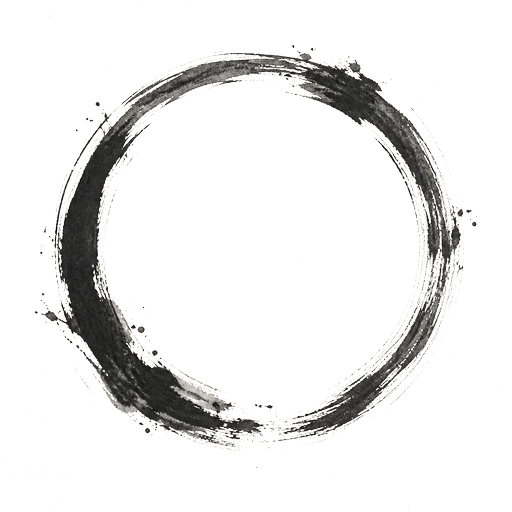

Hồng Đức
Tu Tiên Lộ
Nghịch chuyển càn khôn
Vào game
Đồng nhân lấy bối cảnh
Phàm Nhân Tu Tiên
Bỏ qua ▸
🔊
Hồng Đức Tu Tiên Lộ
Nghịch chuyển càn khôn
Tên nhân vật
Chọn xuất thân
Hoặc tự gõ xuất thân
Xuất thân tự do (bỏ trống là “tán tu vô danh”)
Bắt đầu

Hồng Đức Tu Tiên Lộ
Chương 1 · Đại chiến Dã Lang Bang
Hệ Thống
AI kể: Bật
Chơi lại
🔊
Chương 1 · Đại chiến Dã Lang Bang
✕
Làm
↩ Lùi hành động
✕
✦ Cơ duyên
—
—
Mô tả
—